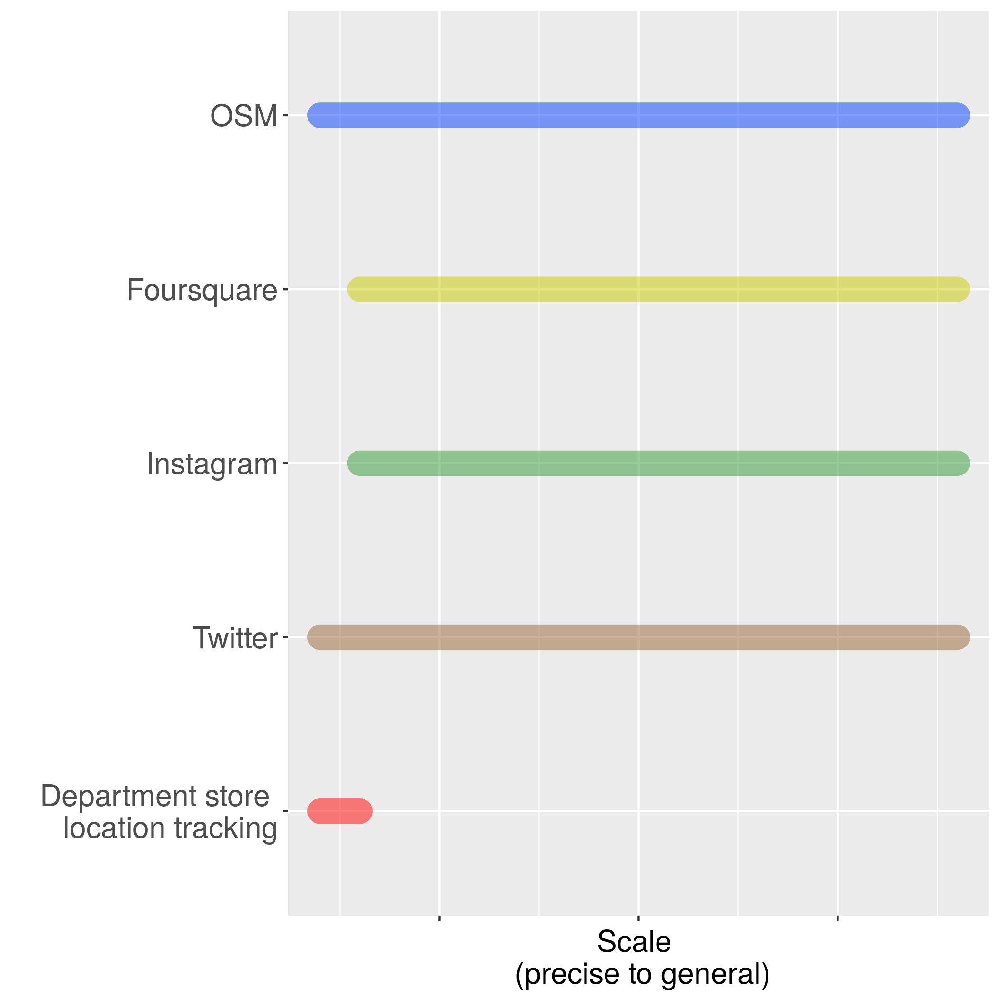
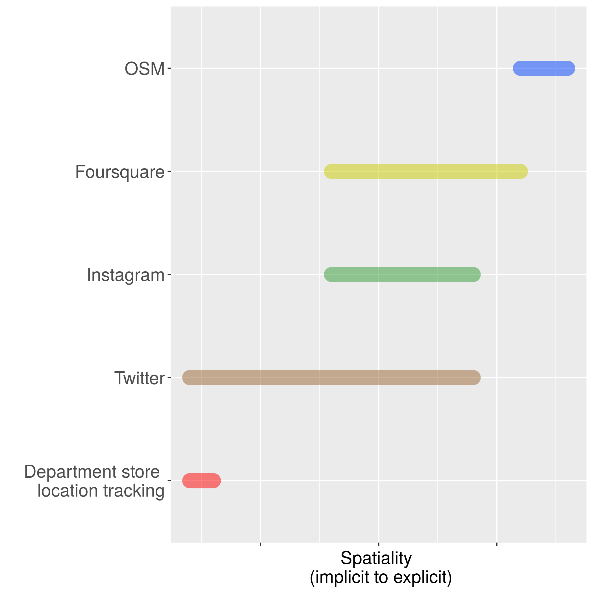

A multidimensional topology for crowdsourced geographic information
Matthew Haffner and Adam Mathews
Oklahoma State University - Department of Geography
Introduction
- Crowdsourced geographic information (CGI) is now commonly used in the study of spatial processes
- There is an assumed consistency across (CGI) platforms in terms of ...
- The nature of geographic information and how it is produced
- The characteristics and behavior of users
Our proposal
- A multidimensional topology based on the characteristics of each platform
- A continuum instead of discrete categories
- Level of compliance (x)
- Scale (y)
- Spatiality (z)
Level of Compliance
- "Opt-out" vs. "Opt-in" platforms (Harvey 2013)
- Ranges from low to high compliance
- Department stores tracking shoppers' locations
- Permanently enabling location features in Twitter profile settings
- Geotagging on a tweet-by-tweet basis
- Volunteering building footprints to OSM
Level of Compliance

Scale
- Ranges from precise to general
- Marking a point in OSM,
Tweeting with precise location - Marking a neighborhood in OSM,
Tweeting from a neighborhood - Marking a US state in OSM,
Tweeting from "Oklahoma, USA"
Scale
Spatiality
- Ranges from implicit to explicit (Graham and Shelton 2013)
- Tweeting "Watching TV with my cat" (location information attached)
- Tweeting a photograph at a soccer game (no location information attached)
- Tweeting "Watching TV with my cat #dormlife #illinois #illini #uiuc" (no location information attached)
- Tweeting a photograph at a soccer game with text "Watching the Chicago Fire" (location information attached)
Spatiality
Conclusion
- Platforms can vary greatly
- Characteristics and purposes of users vary greatly
- Combinations have implications
References
- Goodchild, M. (2007). Citizens as censors: The world of volunteered geography. GeoJournal, 69 (4): 211-221.
- Harvey, F. (2013). To volunteer or contribute location information? Toward truth in labeling for crowdsourced geographic information. In Crowdsourcing Geographic Knowledge: Volunteered Geographi cInformation (VGI) in Theory and Practice, ed. D. Sui, M. Goodchild, S. Elwood, 31-42. Netherlands:Springer.
- Elwood, S., Goodchild, M., & Sui, D. (2013). Prospects for VGI research and the emerging fourth paradigm.In Crowdsourcing Geographic Knowledge: Volunteered Geographic Information (VGI) in Theory and Practice, ed. D. Sui, M. Goodchild, S. Elwood, 361-375. Netherlands: Springer.
- Stephens, M. (2013). Gender and the GeoWeb: Divisions in the production of user-generated cartographicinformation. GeoJournal, 78 (6): 981-996.
- Zickuhr, K. (2013). Location-based services. Pew Research Center: Pew Internet.